Curso de Gnosis
La Antorcha del Conocimiento
Enseñanzas Sagradas
Curso ONLINE de Gnosis / 56 clases correlativas gratuitas
Movimiento Gnóstico Internacional
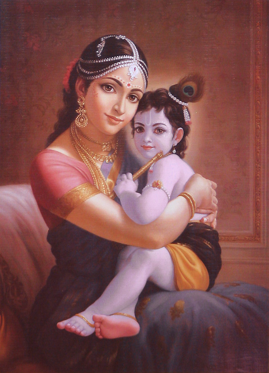
Conócete a ti mismo, y conocerás el Universo y los Dioses.
Bienvenido a nuestro Curso Online de Gnosis.
Aprende las técnicas ancestrales para desarrollar tus capacidades internas y experimentar la realidad del Ser. Las clases son completamente gratuitas y están abiertas a todas las personas que buscan una transformación interior profunda.
☀️
La Gnosis es una enseñanza que se pierde "en la noche de los siglos..."
Nuestro curso ONLINE consta de 56 clases correlativas.
Le invitamos a ver algunos extractos de los temas que ofrecemos.
¿Qué encontrarás en el curso?
✔ Meditación
✔ Interpretación de los sueños
✔ Psicología del autoconocimiento
✔ Desdoblamiento astral
✔ Kabbalah
✔ Alquimia
✔ Técnicas para el desarrollo interior
¡COMENZA AHORA EN EL AULA VIRTUAL!
Este curso sirve para personas que se acercan por primera vez a estas enseñanzas como para quienes desean profundizar del estudio del autoconocimiento.
El significado de la palabra Gnosis es "Conocimiento", en griego.
Grandes Maestros y Maestras como Krishnamurti, Ramakrishna, Vivekananda, Blavatsky, Gurdjieff, Ouspensky, Rumi, Fulcanelli, y Samael Aun Weor, fundador del Movimiento Gnóstico Internacional – han llegado, por medio del trabajo interior, a despertar Conciencia con el fin de retransmitir humildemente este Conocimiento Universal , y ofrecer a la humanidad herramientas concretas para salir de la ignorancia y del sueño del inconsciente.
Jesus, Buddha, Krishna, Quetzalcóatl, Rama, Samael Aun Weor, Hermes, Melchisedech, Mahoma, Lao Tse, etc., todos se sacrificaron, todos vivieron ese Drama Crístico de la Pasión, con el fin de dar ejemplo, enseñando a los hombres y mujeres, a través del Conocimiento de sí mismo, a como encontrar el estado Divino perdido.
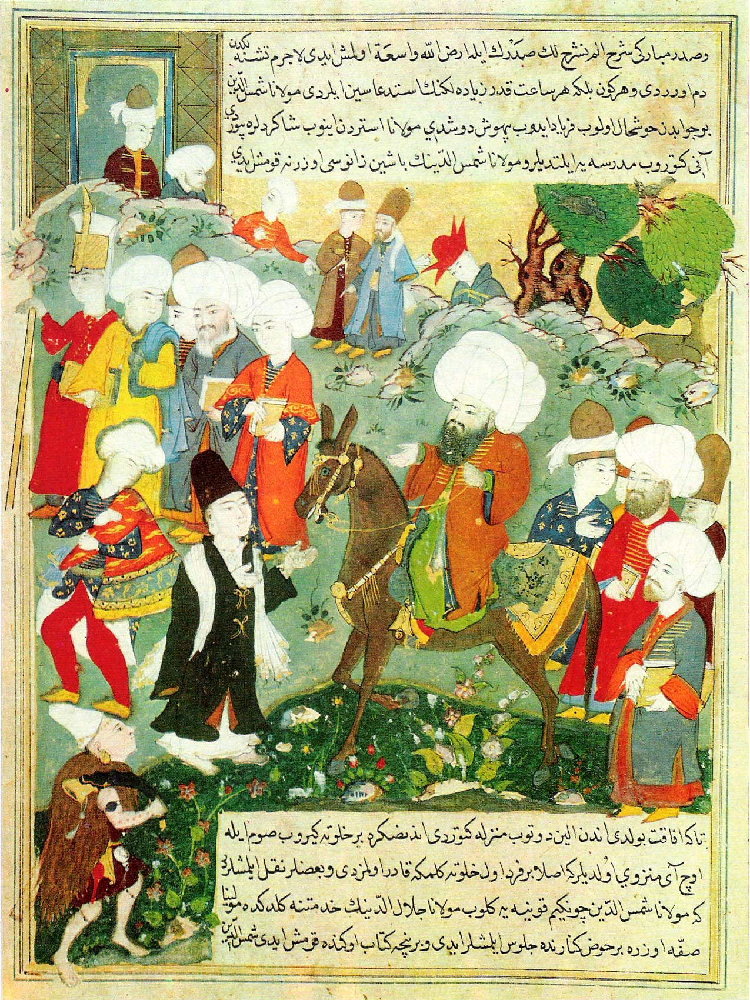
La Gnosis siempre ha enseñado cómo cada mujer y cada hombre puede regenerarse íntegramente, mientras desarrolla todo su potencial, casi ilimitado.
En el Círculo Exterior se encuentran los principios redentores, sin desvelar los misterios y las claves esotéricas y prácticas. Los aspirantes que demostraban valor, madurez y en última instancia amor por lo Divino, eran admitidos en el Círculo Interior.
Hoy en día los grupos esotéricos, místicos y religiosos son ejemplos del Círculo Exterior; transmiten trozos de la antigua Sabiduría Gnóstica.
Hemos resumido muy brevemente este Conocimiento auténtico por los Tres Factores de la Revolución de la Conciencia: Muerte psicológica, Nacimiento en Espíritu y el Sacrificio desinteresado por la humanidad.
Muerte psicológica (o Disolución del Yo).
Nacimiento en Espíritu (Suprasexualidad).
El Sacrificio desinteresado por amor a la humanidad.
A través de una amplia gama de clases, repartidas a lo largo de más de un año (con frecuencia semanal), y de numerosas prácticas que incluyen la meditación; el propósito del MGI es retransmitir la Enseñanza del Círculo Interior de una manera íntegra, viva y revolucionaria.
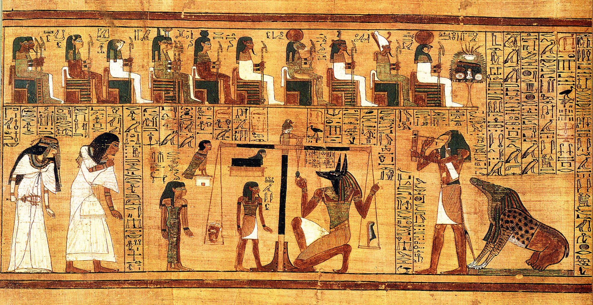
En su búsqueda por experimentar la realidad que se esconde detrás de los grandes misterios, desde los inicios del tiempo, el ser humano ha buscado desplegar las capacidades casi ilimitadas del cuerpo y la mente.
Inscribiéndote al curso podrás descubrir este Conocimiento común a todas las culturas del mundo y sintetizado en la obra de Samael Aun Weor.
La Gnosis, la Psicología Revolucionaria, el Sueño y el Astral, la Meditación, la Alquimia y el Tantrismo Blanco (Sexualidad Sagrada), el Esoterismo Iniciático Práctico, el Origen del Sufrimiento y la Muerte del Ego, las Practicas para el Despertar y la Sanación (Ejercicios Tibetanos, Runas Nórdicas, Elementoterapia), etc., son algunos de los temas que descubrirás en el Curso.
¿Por qué? Porque el Conocimiento Universal y Atemporal le pertenece a la misma Humanidad.
Nuestra misión en el MGI es RETRANSMITIRLA
en Honor a los que dieron su Vida por mostrarla.

Jean-Marie Claudius,
fiel servidor y amante del Ser.
56 clases correlativas
● Seminario I: La Gnosis
Gnosis - Conocimiento Universal Atemporal
Un recorrido por la simbología que comparten todas las grandes religiones de la historia de la humanidad. Trinidades, serpientes, ángeles, devas, espíritus de la naturaleza.
Lo exterior de un conocimiento que guarda un gran secreto....
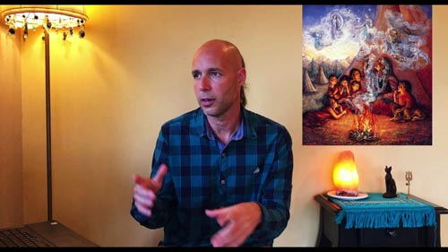
El Camino y La Vida
¿Qué es la vida? ¿Para qué vivimos? A lo largo de la historia de la humanidad, toda religión auténtica, todo grupo esotérico, grandes sabios del pasado, han hablado del "Camino" y del "Despertar". El Camino hacia la autorrealización y el Despertar de la Consciencia. Hay dos vías en la vida: la horizontal, asociada a la búsqueda ilusoria de la felicidad material, y la vertical, que implica un despertar de la conciencia y el trabajo sobre sí mismo. ¿Qué es lo que nos mantiene sin poder despertar ni transitar el Camino nombrado por estos grandes sabios?
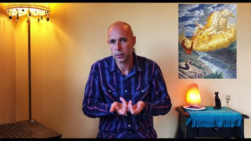
Los Tres Factores de la Revolución de la Consciencia
El Camino que revoluciona nuestra vida por completo y nos conduce hacia la liberación total del ego necesita de tres "ingredientes" básicos. Muerte del Ego, Nacimiento en Espíritu y Sacrificio desinteresado por los demás. Sin estos tres principios no hay revolución íntima. Todo Santo, Santa, todo Gran Iniciado ha vivido su vida en base a estos Tres Factores.
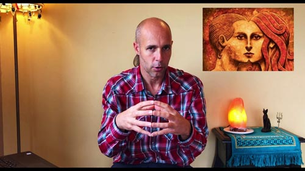
● Seminario II: Psicología Revolucionaria
Psicología Revolucionaria
Creemos que tenemos un "yo", pero a su vez, nos damos cuenta que no tenemos unidad de pensamientos, unidad de sentimientos y unidad de voluntades. Cambiamos de instante en instante. Por ej.: Sacamos conjeturas de las cosas, para luego con el tiempo refutarnos a nosotros mismos. ¿Cómo podríamos cambiar realmente y encontrar la verdadera unidad?
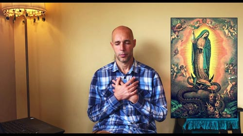
Los Tres Cerebros del organismo humano
Conocemos muy bien cómo funciona el cerebro intelectual. Pero desconocemos que tenemos realmente un cerebro emocional, y otro motor, instintivo, sexual. ¿Cómo funcionan estos tres cerebros en el organismo humano?
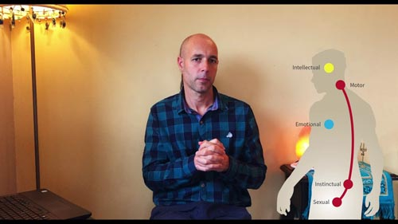
El Recuerdo de Sí Mismo
El trabajo sobre sí mismo se fundamenta en la capacidad de desarrollar y despertar nuestra consciencia. Esto tiene que ver con la capacidad de recordar quién soy, cómo es mi relación con las cosas materiales and dónde es que me encuentro. Una consciencia desarrollada es la de la persona que percibe más de lo que los sentidos físicos muestran de la realidad.
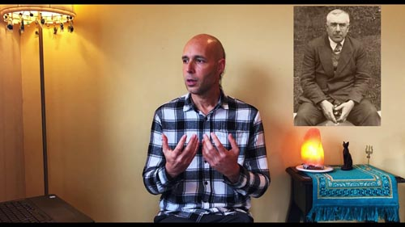
● Seminario III: Las Dimensiones, La Meditación & El Sueño
Dimensiones Paralelas
Todas las culturas han hablado de cielos, dioses, diosas, elementales, ángeles, arcángeles, devas, espíritus de la naturaleza. ¿Cómo podemos conocer estas dimensiones? Los mismos científicos saben que existen otras dimensiones. Pero lo que no saben, es que estas dimensiones están pobladas.
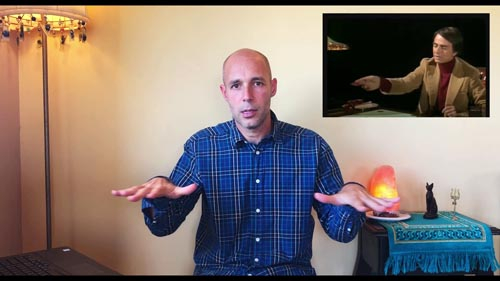
El Desdoblamiento Astral
¿Qué sucede cuando dormimos? ¿Y qué pasaría si lográramos entrar en ese estado pero conscientes? El desdoblamiento astral es un hecho científico que puede servirnos para penetrar en regiones superiores de la naturaleza.
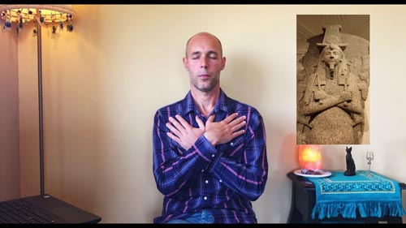
La Meditación
Cuando logramos unir los tres cerebros es cuando logramos una buena meditación. ¿Cuáles son los beneficios de la meditación más allá de lo que nos produce en el cuerpo físico? Se nos escapan muchas cosas en la vida. Una correcta meditación es el Pan diario del Sabio.
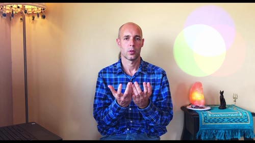
El Fenómeno del Sueño
¿Por qué necesitamos dormir? ¿Por qué soñamos? ¿Qué soñamos? ¿Por qué no recordamos los sueños? ¿Qué podemos lograr cuando el cuerpo reposa? ¿Cuáles son los diferentes tipos de sueños? Los antiguos veían el dormir muy diferente a lo que la modernidad nos dice. ¿Qué dicen los antiguos? ¿Qué dicen los Maestros?
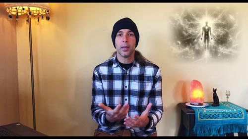
El Yoga del Sueño
El sueño es un instrumento que nos permite conocernos para despertar consciencia; un instrumento para hacer Luz en nuestras propias tinieblas interiores. El Maestro, Swami Vivekananda nos dice que el sueño puede reemplazar al Maestro. Aquí mostramos las prácticas precisas para despertar en los sueños y poder tener la capacidad de recordad detalles que nos servirán en el Camino...
Aqui va la descripcion de la clase
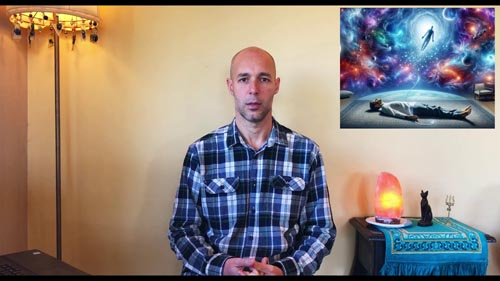
● Seminario IV: Psicocosmología
La Ley de las Octavas
El Tres crea, el Siete organiza... 7 colores, 7 días de la semana, 7 notas musicales... La importancia del 7 y el por qué los nombres de las notas que utilizan las escalas. ¿De dónde viene cada uno de ellos, Do, Re, Mi, etc? ¿Qué es un semitono y qué representa en la creación, y en nosotros mismos?
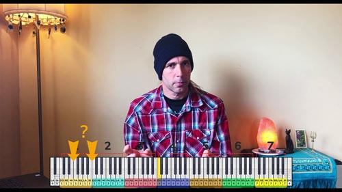
La Transformación de las Impresiones
Para vivir, el cuerpo necesita de alimentos que contienen nutrientes. ¿Cuáles serían los nutrientes del Alma, y de dónde podemos obtenerlos para cristalizarla en nosotros mismos? Damos prácticas para obtener este alimento que encontraremos en todas las situaciones que se presentan en nuestra vida.
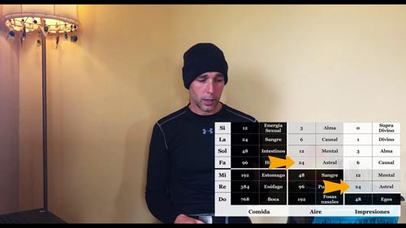
Los Siete Tipos de Humanos
Intelectuales, emocionales, gente más instintiva o con grandes capacidades motrices. Tres tipos de seres humanos que todos conocemos. ¿Cuál es el cuarto tipo de Ser Humano? Y aún más... ¿quiénes serían realmente los tipos de Humanos cinco, seis o siete?
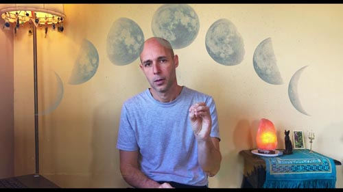
El Cuarto Camino
Siempre se habló del Camino, hacia las Dimensiones Superiores, hacia Dios; la realización, el Camino Óctuple del Buda, el Camino del Medio, el Cuarto Camino, etc. ¿Cuáles fueron los primeros tres tipos de caminos para buscar la realización, y cuál sería el cuarto camino que plantearon los Grandes Maestros?
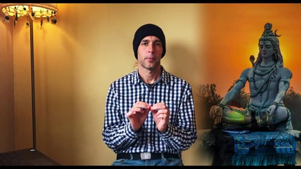
● Seminario V: La Vida & La Muerte
La Transmutación de las Energías Sexuales
Que el cuerpo posee una bodega energética lo han hablado muchos grandes sabios: Lao Tzu, Sri Ramakrishna, El Dalai Lama... Una enseñanza perdida en la humanidad, pero que hasta en la misma Biblia se nombra en varios pasajes. Esto tiene que ver con la Serpent Superior y con lo que el Maestro Jesús le dice a Nicodemo: "El que no naciere de nuevo no puede ver el Reino de Dios".
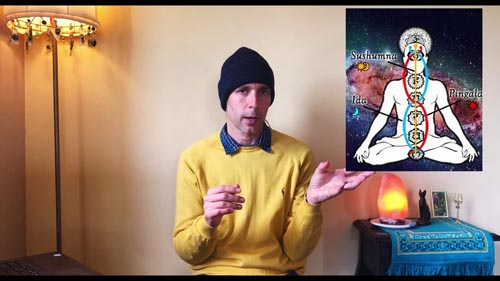
Los Chakras
Actualmente se conoce mucho sobre estos centros magnéticos que verdaderamente pertenecen a nuestro cuerpo astral. Pero hay más por conocer de ellos. ¿Cuáles son las prácticas para que estas ruedas magnéticas se nutran de energías superiores, y qué produciría en nosotros que eso sucediera?
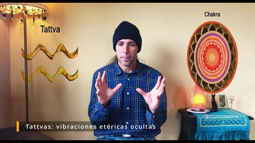
Misterios de la Vida y de la Muerte
¿De dónde venimos? ¿Hacia dónde vamos? ¿Qué pasa luego de que el cuerpo físico muere? ¿Cómo comprobamos que el Retorno a un nuevo cuerpo físico es algo real que podemos descubrir? ¿Cuántas veces podemos retornar a un nuevo cuerpo?
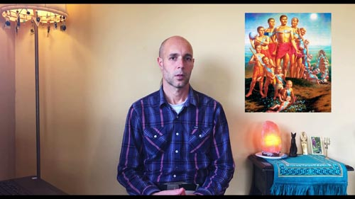
La Ley del Karma
Recurrencias, situaciones que no comprendemos por qué se repiten o simplemente por qué nos pasan en la vida, ese "¿por qué a mi? que nos preguntamos. Sin ser una teoría, la Ley del Karma rige nuestras vidas. Pero... ¿qué es verdaderamente el Karma? ¿Cómo podemos aprovechar de esta Ley para conocernos y actuar mejor en nuestra vida?
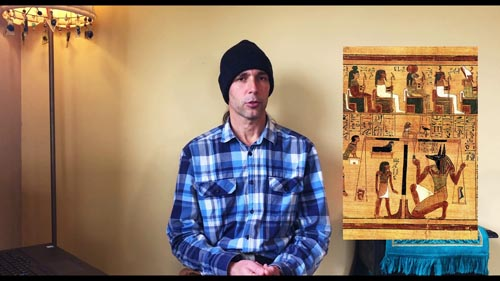
La Rueda del Samsara
Grandes maestros budistas nos han hablando en muchas oportunidades de la Rueda del Samsara. Hay una mecánica en la naturaleza, aquello que da nacimiento, y aquello que da la muerte. Esta mecánica opera en nuestras existencias también. ¿Cómo la entendemos? ¿Podemos salirnos de esta mecánica? ¿Cómo?
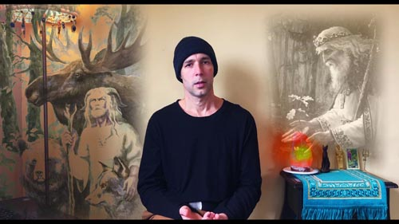
● Seminario VI: Prácticas para el Despertar
Los Ejercicios Tibetanos
Mientras entendemos el poder de la oración, estos ejercicios tibetanos nos ayudan a rejuvenecer nuestro cuerpo.
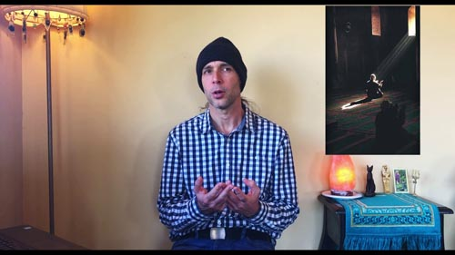
Las Runas Nórdicas
Las runas nórdicas son las letras (símbolos) de uno de los primeros alfabetos de la humanidad. ¿Pero cómo aplicamos esa simbología en nuestra propia vida? ¿Cuál es el poder de cada una de las runas?
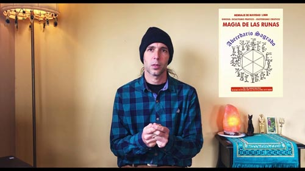
● Seminario VII: Antropología Gnóstica
La Era de Acuario
Mucho se ha dicho sobre La Era de Acuario. Pero... ¿qué es puntualmente lo que define a esta Era? ¿Cómo podemos saber cuándo comienza realmente? ¿Cuáles son los cambios que trae?
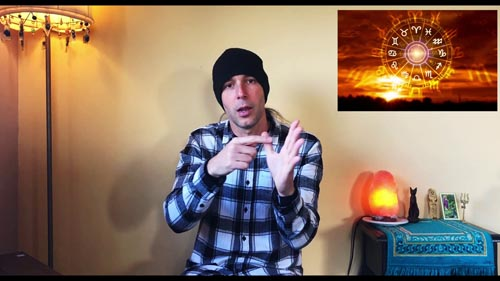
La Atlántida
Conocido por muchos, este continente que tuvo lugar en el océano Atlántico (de allí su name) encierra muchos enigmas. ¿Qué sucedía en las otras tierras del planeta? ¿Quiénes eran los Atlántes? ¿Por qué aquella raza terminó? ¿Cómo terminó?
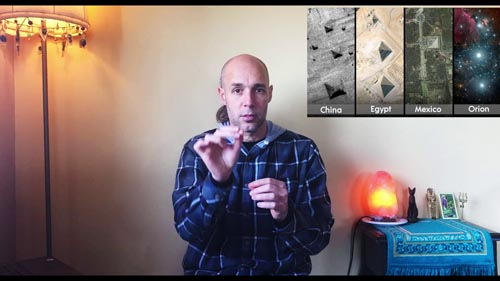
Las Siete Razas
Adentrándonos en la historia, y mucho más atrás en el tiempo que la misma Atlántida, los Grandes Iniciados conocedores del Akasha, los grandes lectores de las memorias de la naturaleza y de sus registros akáshicos, nos cuentan sobre la existencia de previas razas humanas. El Gran continente de la ancestral Lemuria, es uno de los ejemplos de una tierra que sostuvo la vida de una raza que la ciencia desconoce. ¿Pero qué hubo antes? Aquí develamos el misterio del Calendario Azteca que nos cuenta sobre todo esto.
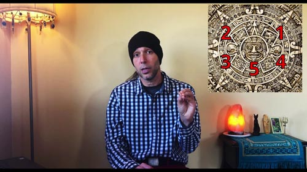
● Seminario VIII: Tantrismo
Los Tres Tipos de Sexualidad
Nos adentramos en los misterios del sexo, aquella simbología nombrada y explicada en el Ciclo A, la Serpiente. ¿Cómo está ligada nuestra sexualidad a nuestra psicología? Avanzamos en el tema del Tantrismo y la visión ancestral de nuestra relación con la energía más poderosa de la creación, y el cómo tiene que ver con El Camino que todo gran Maestro y Maestra ha recorrido.
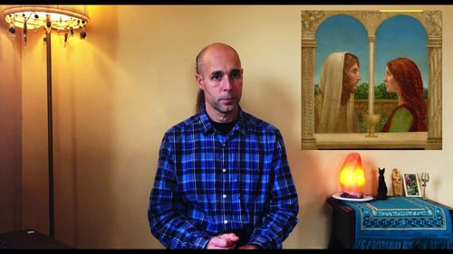
Kundalini & Tantrismo - Parte I
Conociendo los misterios del sexo, los tipos de sexualidad explicados y su relación con nuestra psicología, damos las claves para transformar nuestra vida radicalmente a través del despertar del Fuego Sagrado que duerme en la base de nuestra columna vertebral. Tantrismo Blanco: una forma Superior de relacionarnos para aprender a Amar.
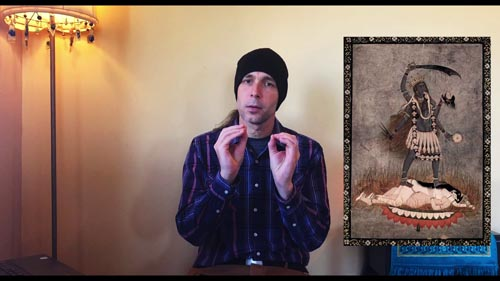
Kundalini & Tantrismo - Parte II
En esta segunda parte de estas muy importantes conferencias, damos las claves precisas que el Maestro Samael Aun Weor develó para esta época de la humanidad. Claves, y detalles importantísimo para tener muy en cuenta.
● Seminario IX: Kabbalah
Kabbalah - El Árbol de la Vida
Nombrado en todas las culturas, por ejemplo en el antiguo Egipto como el árbol Sicomoro, o el Yggdrasil entre los nórdicos. Este Árbol y sus sefirotes son la representación de la estructura del Cosmos y del Microcosmos, el Hombre.
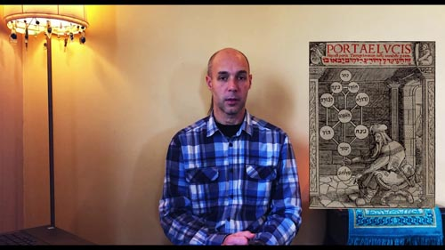
La Subida Kabbalística
Ya con varios temas aprendidos a lo largo del curso, ligados a los Cuerpos Superiores del Ser, a la Kundalini nombrada en el Tantrismo Blanco, y conociendo muy bien cómo está representada la creación en el Árbol de la Vida, es momento de ver cómo recuperamos aquellas ramas más altas del mismo.
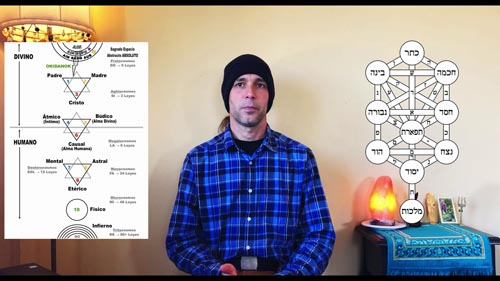
● Seminario X: Alquimia de la Autorrealización
Alquimia de la Autorrealización - Parte I
¿Podría alguien separar los 4 elementos de la naturaleza y volver a reunirlos para crear? Una tarea imposible. Pero los grandes alquimistas dieron con una fórmula acertada en dicha búsqueda.
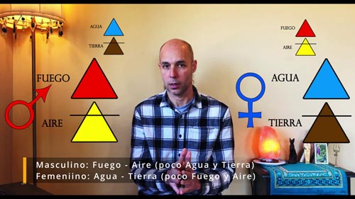
Alquimia de la Autorrealización - Parte II
Los grandes alquimistas descubren cómo hacer para intentar lograr la "Piedra Filosofal": convertir los metales viles en oro, convertir el plomo del ego, en oro del Espíritu. ¿Cuál era el secreto?
Alquimia de la Autorrealización - Parte III
Nigredo, Albedo, Citrinitas, Rubedo. Los colores que la piedra filosofal va tomando en su proceso de creación. Pero... ¿qué es verdaderamente lograr hacer la piedra? ¿Qué es la misma piedra? ¿Cómo logramos este trabajo? ¿Cómo relacionamos estos procesos con los Tres Reyes Magos?
● Seminario XI: Esoterismo Crístico Iniciático
Misterios Menores & Mayores
A lo largo de la historia de la humanidad han habido grandes escuelas de misterios. ¿Qué es lo que enseñaban aquellas escuelas? ¿Cómo están ligados estos misterios a nuestra vida diaria, al conocimiento de las dimensiones superiores, al conocimiento del tantrismo blanco y de la alquimia?
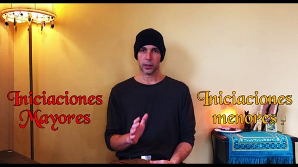
El Crísto Cósmico
La Fuerza de la Vida que nace del Absoluto, se sacrifica y penetra en la materia para animarla, y así servir al Padre Cósmico. Esta es la Fuerza que todo Gran Iniciado logra encarnar en sí mismo. Este es el misterio del Niño Cristo que nace en el pesebre del Iniciado.
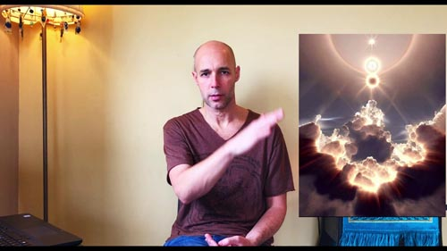
● Seminario XII: Origen & Disolución del Yo
Nuestra Herencia Lunar
Creemos que la Luna es nuestro satélite. Pero parecería lo contrario cuando nos damos cuenta que ella domina las mareas de los océanos, los ciclos de la naturaleza. La influencia Lunar afecta nuestra propia psiquis también. ¿Qué es verdaderamente esa esfera y por qué tiene un aspecto de cadaver?
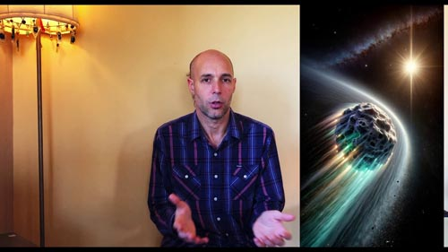
La Disolución del Yo
Didáctica precisa que nos brinda el Maestro Samael Aun Weor para la disección de nuestros agregados psicológicos, aquellos "demonios rojos de seth" llamados en el antiguo Egipto, aquellos "Siete Pecados Capitales" llamados en el Cristianismo.
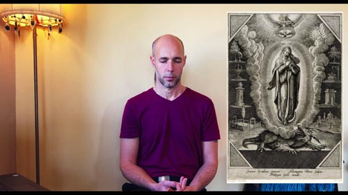
Los Infiernos
Todas las culturas hablaron de las Regiones Inferiores de la Naturaleza. Los Aztecas lo llamaron Mictlan, los Tibetanos Avitchi, los Romanos, Averno; Griegos Tartarus o Ades; Egipcios, Amenti, Kabbalistas Kliphos, Cristianos Infierno. ¿Qué son estas regiones y cómo están ligadas con la Rueda del Samsara que hablamos sobre el final del Ciclo A? Recorremos estas regiones con ilustraciones de Gustav Doré.
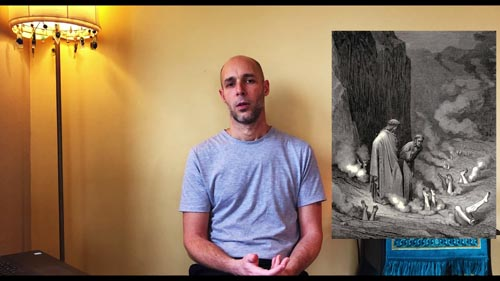
● Seminario XIII: La Experiencia de lo Real
La Mente Interior
Mas allá de los de los cinco sentidos de mente sensorial, y mas allá de creencias de la intermedia, está la mente interior. Esta es la Mente que Experimenta las Grandes Verdades de la Vida y de la Muerte.
Todo el trabajo gnóstico se resume en lograr abrir nuestra mente interior. La Puerta está en la Emoción Superior.
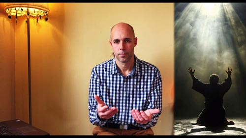
El Vacío Iluminador
Llamamos Vacío Iluminador no a la comprensión de que todo está hecho de un vacío energético, sino a algo que está ligado a nuestra mente interior. Nos referimos a la capacidad de percepción del mundo material cuando nuestra mente está vacía de la basura que hay dentro de ella. Esto hace referencia a lo que dijo el Buda de vaciar el cuenco, y poder percibir con la iluminación interna las cosas tal como son, lo real, lo que está más allá de la materia en sí misma.
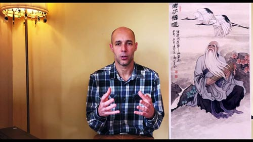
● Seminario XIV: Magia Elemental & Medicina Natural
Los Elementales
En esa región etérica, en esa cuarta dimensión viven las criaturas elementales de la naturaleza y esto es algo que debemos comprender profundamente. A tales criaturas se les da el nombre de elementales, precisamente porque viven en los elementos. Las almas de las plantas son los elementales de la Naturaleza. Estas criaturas inocentes todavía no han salido del Edén, y por lo tanto aún no han perdido sus poderes ígneos. Los elementales de las plantas juguetean como niños inocentes entre las melodías inefables de este gran Edén de la Diosa Madre del Mundo.
Salamandras, Silfos, Ondinas, Nereidas, Sirenas, Gnomos... son los nombres de aquellos elementales a los cuales podemos acudir cuando es Voluntad del SER.
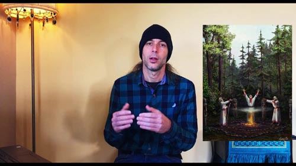
Medicina Natural & Oculta
Desde los tiempos más remotos la humanidad ha conocido los secretos de la medicina natural. Grandes sabios, magos, chamanes conocían el poder curativo de los cuerpos vegetales, pero también, de los Espíritus de la Naturaleza misma.
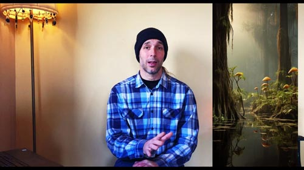
● Seminario XV: Ser o No Ser
La Transvalorización
Cada uno de nos llega al mundo con un sistema de valores, prioridades. Si miramos nuestro caso, veremos nuestras prioridades en nuestra vida. ¿Cuál es su prioridad? Allí donde está nuestro corazón. Dime donde está tu corazón y te diré quién eres..., y te diré tus porvenires.
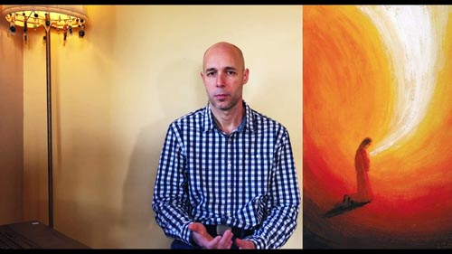
"Maya" - La Ilusión
¿A qué se refieren aquellas grandes tradiciones espirituales con que todo es ilusión, o sueño? Pues a nuestro sueño interior. Lo que proyectamos en la vida, cómo recibimos lo que sucede, cómo estamos hipnotizados frente a las situaciones y cosas en la vida. No vemos cosas claras. No escuchamos bien. Interpretamos siempre las cosas como no son. Este es el sueño interior.
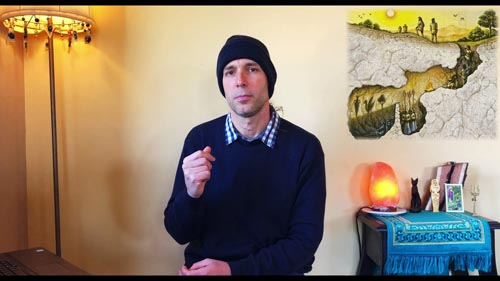
El Ser
Cada Ser con su papel en los cosmos, sostienen la creación. "Santificado sea Tu Nombre". "Hagase Tu voluntad en la Tierra como en el Cielo".
Todos tenemos un Ser, una chispa Divina. Todos tenemos un nombre verdadero, un nombre que no cambia.
Son los Seres de los Grandes Iniciados, diosas y dioses vivientes que han caminado sobre la faz de este planeta.
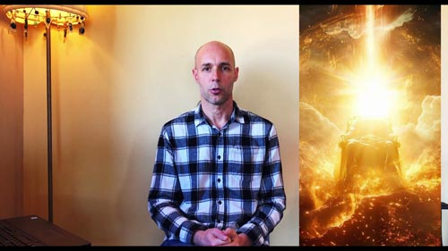
Cómo aprender a Escuchar
¿Cuántas veces en un dilema con una persona hemos puesto prioridad sobre nosotros mismos sin entender qué necesita el otro, y desde dónde actúa la otra persona? Nos olvidamos del dolor de los demás y preferimos nuestro orgullo a abrir nuestro corazón.
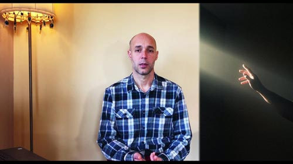
● Seminario XVI: La Sabiduría del Amor
El Amor
Se puede encontrar a alguien e intentar formar pareja y amar, y podemos hablar del amor. Pero hay amores y amores. Una cosa es el emocionalismo y el apego y otra es el Amor desde el respeto y la aceptación de las dificultades del otro.
Vinimos para aprender con lágrimas las recurrencias de existencias pasadas. Vinimos a aprender de la LEY DEL AMOR.
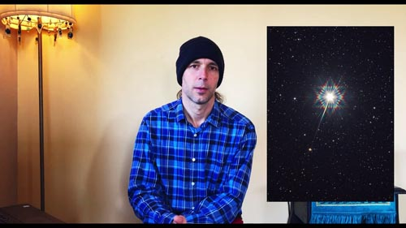
El Sacro-Oficio
Corremos detrás de falso placeres. Nunca hemos aprendido a dar más de lo que nos corresponde dar. Nunca hemos aprendido de la Ley del Sacrificio. No hay escuelas que nos enseñen a dar sin esperar a cambio.
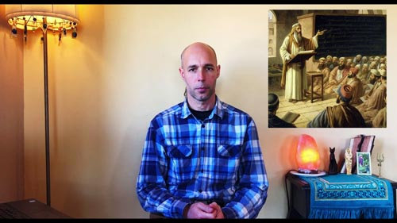
● Seminario XVII: Luz & Tinieblas
El Lucifer Particular
Podríamos decir que es la oscuridad de las tinieblas lo que da la Belleza a la Luz. Ambas cosas coexisten para nuestro bien. Es la oscuridad misma la que nos da el impuso hacia Luz, y nos permite luchar contra nosotros mismos.
Nada llega sin un esfuerzo, nada crece correctamente sin resistencias.
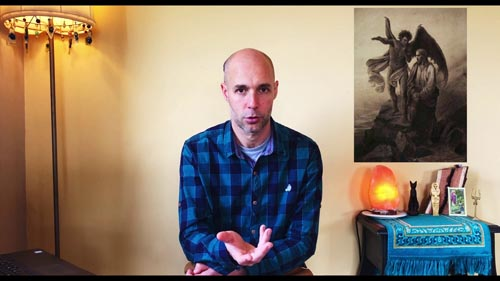
La "Bestia" o El Anticristo
Esta energía planetaria tan crecida hoy en día, es el resultado de la suma de todos nuestros aspectos negativos, yoes, de todo el planeta. Es la misma inteligencia detrás el Ego. ¿Cómo podemos ir en contra de esta fuerza tremendamente devastadora?
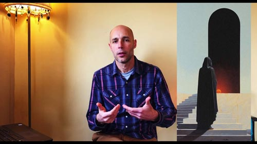
Los Ataques Tenebrosos
Hay personas que trabajan para el mal. Y de esas personas, algunos lo saben y otros no lo saben. Son "sinceros equivocados", y usan fuerzas luciféricas y arihmánicas, o anticrísticas para darse poder. Estos son los conocidos Magos Negros, magos identificados con el YO. En todos los pueblos existieron y existen los Brujos negros. Hoy en día mucha gente los busca para hacer daño, o para ir en contra de las voluntades de las personas, y de los Seres de esas personas. Unión de parejas, sanaciones sin saber si corresponden, etc. ¡Cuidado! La oscuridad se disfraza de Luz.
● Seminario XVIII: El Avatara de Acuario
Las Tres Montañas
El mapa concreto del Camino. Fue en el año 1972 donde los Guardianes del Camino se le aparecieron en las dimensiones superiores al Maestro Samael Aun Weor y en su gran experiencia directa, profunda y completa del camino traza el mapa para que se conozca en la Nueva Era de Acuario. Este mapa muestra tres etapas claves o instancias del camino hacia la liberación final. Hemos hablado de la Kundalini, de la Cábala. Aquí se finaliza de explicar concretamente el por qué de todo lo visto anteriormente.
Samael Aun Weor
Vida y Obra del Gran y Venerable Maestro Samael Aun Weor. Su infancia, sus capacidades, su propio camino y la experiencia compartida del Maestro autorrealizado que lo dio todo por la humanidad doliente.
● Seminario XIX: Astrología Esotérica
Los Siete Rayos Planetarios
Del Absoluto emanan Tres Fuerzas Principales que crean. Esta creación se organiza gracias a la Ley del Siete. Son Siete Rayos que estructuran todo. Cada uno de nos tiene un Ser perteneciente a tal o cual Rayo. Cada cosa creada pertenece a uno de estos siete rayos.
Astrología
Un tema amplio y profundo que se remonta a la noche de los tiempos. Maestros y discípulos buscaban y conocían de donde venían, a dónde iban, y cómo habían llegado al mundo: con una huella astral, una firma cósmica que nos caracteriza al retornar a la existencia mientras el Alma atraviesa las esferas planetarias.
● Seminario XX: Tarot & Numerología
El Tarot - Parte I
Explicación de los Arcanos Mayores I al X y su correlación con los sefirotes del Árbol de la Vida, el Árbol Kabbahlistico.
El Tarot - Parte II
Explicación de los Arcanos Mayores XI al XXII y su correlación con los sefirotes del Árbol de la Vida, el Árbol Kabbahlistico.
Lectura del Tarot
Ejemplos de lecturas del Tarot para nuestro Autoconocimiento.
● Clase Final
El Camino, y La Verdad, y La Vida.
Palabras finales.
Gnosis Courses - International
Free Gnosis and Meditation lessons online / Cours de Gnose et Méditation gratuits en ligne.
Free Gnosis and Meditation Course Online
Welcome to the International Gnosis and Meditation Online Course. This program provides a deep study of universal spiritual knowledge, covering essential topics such as self-knowledge, esoteric psychology, stress relief, lucid dreaming, and astral projection. Through practical guidelines and regular lessons, you will learn ancient techniques to awaken consciousness, balance your inner energy, and discover the path to your Inner Self. Our lessons are entirely free and open to anyone seeking profound philosophical and spiritual growth.
Cours de Gnose et Méditation Gratuits en Ligne
Bienvenue au cours de Gnose et de Méditation en ligne du Mouvement Gnostique International. Ce programme d'enseignement philosophique et spirituel est dédié à l'éveil de la conscience et à l'auto-connaissance. À travers nos leçons, découvrez les clés pratiques de la psychologie gnostique, du décodage des rêves, du dédoublement astral et du tantrisme blanc. Apprenez à méditer correctement pour dissoudre l'ego, libérer votre essence spirituelle et harmoniser vos centres énergétiques. Les cours sont entièrement gratuits et accessibles à tous ceux qui recherchent une transformation intérieure profonde.
Tu voudrais prendre notre cours en ligne?
 Register
Register

Online Courses / Cours en Ligne
☀️ AGW GNOSIS MGI ☀️